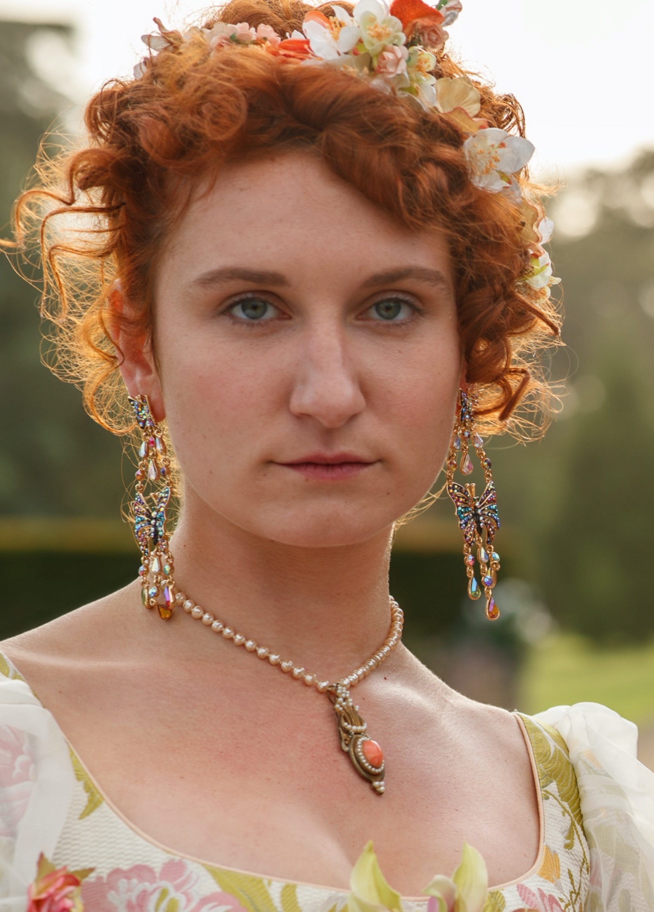
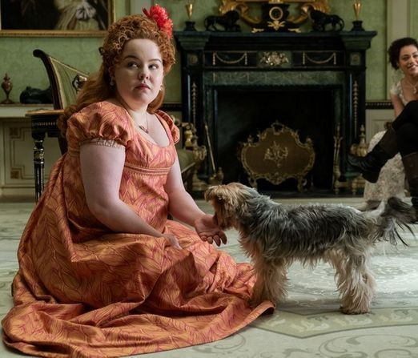

Les Chroniques de Bridgerton
Sommaire
Synopsis
La série se déroule dans la haute société londonienne
lors de la Régence anglaise du XIXe siècle.
L'histoire se concentre sur la famille Bridgerton : Violet,
vicomtesse douairière Bridgerton, ses quatre fils : Anthony,
Benedict, Colin et Gregory ainsi que ses quatre filles : Daphné,
Eloïse, Francesca et Hyacinth.
La famille Featheringtons est également présente avec :
Lady Portia Featherington, son mari Lord Archibald Featherington,
et leurs trois filles, Philippa, Prudence et Penelope
ainsi leur lointaine cousine Marina Thompson.
La première saison suit l'histoire de Daphne Bridgerton,
la fille aînée d'une puissante dynastie, qui entre dans
le monde.
Avec la faveur de la reine Charlotte, elle
rencontre Simon Basset, le Duc de Hastings.
Bien qu'il soit encouragé par son mentor, Lady Danbury,
le Duc est déterminé à ne pas se marier.
Personnages
Famille Bridgerton
Lady Violet Bridgerton.
Vicomtesse, mère des huit enfants et veuve de Lord Bridgerton.

Anthony Bridgerton.
Le premier enfant et actuel Vicomte Bridgerton

Benedict Bridgerton.
Le deuxième enfant

Colin Bridgerton.
Le troisième enfant
Daphne Bridgerton.
quatrième enfant
Eloïse Bridgerton.
La cinquième enfant

Francesca Bridgerton.
La sixième enfant

Gregory Bridgerton.
Le septième enfant

Hyacinthe Bridgerton.
La huitième enfant
Famille Featherington

Lady Portia Featherington.
Baronne et mère des trois filles

Lord Archibald Featherington.
Baron et père des trois filles

Prudence Featherington.
La première fille
Philippa Featherington.
La deuxième fille

Penelope Featherington.
La troisième fille

Marina Thompson.
Une cousine de la famille
Autres Personnages

Simon Basset.
Duc de Hastings

Lady Danbury.
Mentor de Simon

Lady Whistledown.
Narratrice

La Reine Charlotte

Le Prince Frédéric de Prusse.
Neveu de la Reine

Siena Rosso.
Chanteuse d'opéra

Geneviève Delacroix.
La couturière

Nigel Berbrooke.
Un prétendant de Daphne
Will Mondrich.
Boxeur et ami de Simon

Sir Henry Granville.
Peintre et ami de Benedict
Cressida Cowper.
La rivale de Daphne
Distribution
Distribution